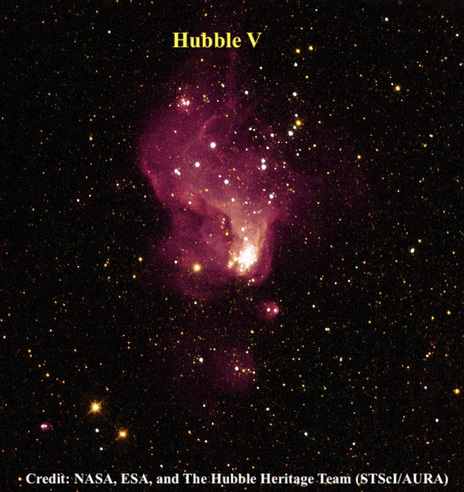
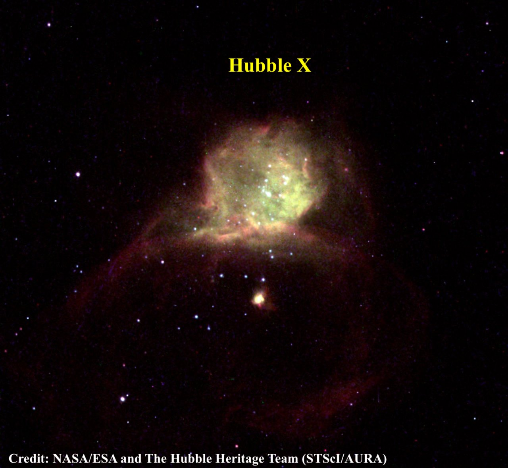
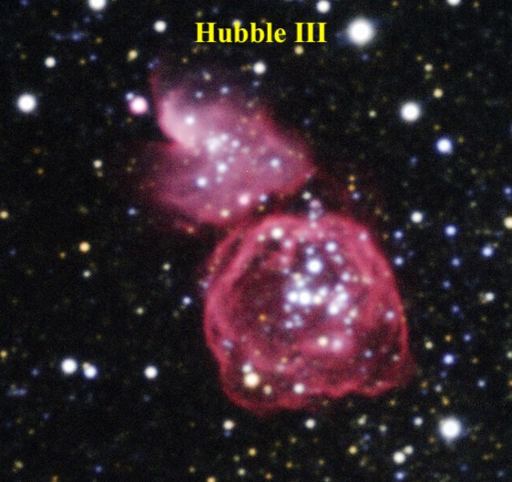
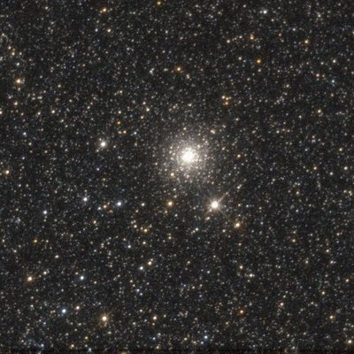

Observing Barnard’s Galaxy from Lassen
One of my favorite late summer targets is Barnard's galaxy (NGC 6822) in Sagittarius. This Local Group dwarf played a pivotal role in the history of astronomy. Although Edwin Hubble discovered the first Cepheid variable in M31 in 1923, his peer-reviewed paper on Barnard’s galaxy in 1925 was the first to clearly identify an extragalactic system.
Visually, Barnard’s Galaxy is a large low surface brightness object. It is difficult or impossible in light-polluted skies, but readily seen in small apertures from a dark site. E.E. Barnard discovered the galaxy with just a 5-inch refractor, but I've even glimpsed it using just 15 × 50 Canon IS binoculars from the Sierra Buttes at an elevation of 7200 feet. In his 1925 paper NGC 6822, a Remote Stellar System, Hubble stated, “NGC 6822 is fairly conspicuous in a short 4-inch finder with a low-power eyepiece, but is barely discernible at the primary focus of the 100-inch. The latter, however, shows the bright details which are invisible in the finder.”
Hubble recorded ten non-stellar objects in NGC 6822 that were measured on a 3.5-hour exposure with the 100-inch reflector. Later studies revealed his list included several giant H II regions, as well as a couple of clusters. I took a look at a few of these objects last week, while observing at the Bumpass Hell parking lot (elevation 8,170 feet) in Lassen National Park with Mark Wagner, Richard Navarette, Ray Cash, Ken Archuleta and Mina Reyes.
Hubble V and X are a pair of compact H II knots on the north end of the galaxy. You may find these visible even if the galaxy is not detected.

Hubble X (also known as IC 1308) was easily picked up unfiltered at 225x in my 18-inch f/4.3 Starmaster. Using 285x, Hubble X stood out fairly well as an irregularly round knot about 25" in diameter. This H II region is located on the north side of the galaxy, 1.7' NW of a pair of 12th- and 14th-magnitude stars separated by 8".
Hubble V is situated just 3' to the west and appears slightly brighter with a higher surface brightness. I picked up Hubble V unfiltered using 175x, though a UHC filter will increase the contrast on both of these H II regions. I found the best view was unfiltered at 225x and 285x. Hubble III is a more challenging object. This giant ring or shell lies on the northwest side of the galaxy and was only barely visible.


Hubble VII is the oldest and brightest globular cluster within the main body of Barnard's galaxy (in 2013, two more luminous globulars were discovered in the outskirts of the galaxy). I've tried to identify this globular several times previously without a convincing sighting, and I've never seen any reported visual observations of this extragalactic globular.
A high-resolution image is necessary to pinpoint the location of Hubble VII, as a number of very faint, foreground Milky Way stars are nearby, including a 15th to 16th-magnitude star just 30" WSW. In addition, an even fainter star is very close to the SSE edge of the globular. But under superb conditions at Lassen, the globular was visible at 285x about 50% of the time as an extremely faint and small glow, roughly 10" diameter. I couldn't resolve the adjacent star on the SSE edge, but the appearance was definitely non-stellar. I also viewed this challenging object at 393x, where it appears similar in terms of difficulty.

From Barnard's original discovery with a 5-inch refractor to Hubble's studies with the 100-inch reflector at Mount Wilson, NGC 6822 has played an important role in astronomical history. Today, its faint knots and globular clusters provide rewarding challenges for visual observers willing to spend time exploring the galaxy. For more info on these and other objects in Barnard's Galaxy, check out Rich Jakiel's article on Adventures in Deep Space:
Name RA Dec
Hubble III 19 44 34.4 -14 42 20
Hubble V 19 44 52.2 -14 43 09
Hubble VII 19 44 55.8 -14 48 56
Hubble X 19 45 05.3 -14 43 16